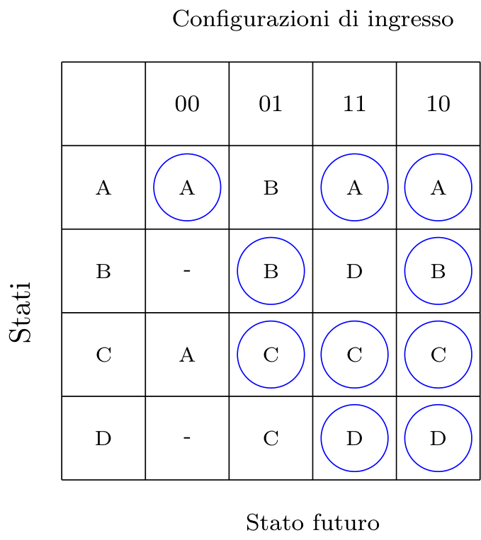

Definizione - Latch CD
Il Latch CD
 ha lo stesso scopo del Latch SR (che realizza in maniera diversa da esso) ed è caratterizzato da:
ha lo stesso scopo del Latch SR (che realizza in maniera diversa da esso) ed è caratterizzato da:
 Essa è quindi una rete sequenziale dato che alle configurazioni
\( 00\)
e
\( 01\)
possono corrispondere due uscite differenti. Il grafo degli stati che descrive questo componente è il seguente
dove gli stati
\( A\)
e
\( B\)
indicano
Dal grafo degli stati è quindi facile derivare la tabella di flusso
Essa è quindi una rete sequenziale dato che alle configurazioni
\( 00\)
e
\( 01\)
possono corrispondere due uscite differenti. Il grafo degli stati che descrive questo componente è il seguente
dove gli stati
\( A\)
e
\( B\)
indicano
Dal grafo degli stati è quindi facile derivare la tabella di flusso
 da cui è semplice derivare la tabella delle transizioni
da cui è facile ottenere la sintesi combinatoria:
da cui è semplice derivare la tabella delle transizioni
da cui è facile ottenere la sintesi combinatoria:
- un ingresso \( C\) , che indica se il latch deve memorizzare i dati (con \( C = 1\) li memorizza);
- un ingresso \( D\) , che indica il dato da memorizzare;
- due uscite che rendono disponibile il valore del bit memorizzato ( \( Q\) ) ed il suo complemento ( \( Q'\) ).

- l'uscita \( Q\) è uguale alla sola variabile di stato \( y\) ;
- lo stato futuro \( Y\) può essere sintetizzata sia in configurazione PS che SP, ricordando di includere i termini ridondanti per evitare le alee statiche. È possibile inoltre utilizzare i Latch SR per eseguire una sintesi diretta (che sarà trattata in seguito).
Definizione - Sintesi del Latch CD sfruttando i Latch SR
Nel caso si sintetizzasse il Latch in forma SP o PS, si dovrebbero aggiungere componenti per fornire l'uscita complementata e si dovrebbe gestire la rete di inizializzazione. È possibile evitare ciò utilizzando il Latch SR con inizializzazione e pilotandolo attraverso una rete combinatoria che "traduce" il codice 'CD' in codice 'SR'.
Per ottenere tale codificatore è sufficiente ragionare sulle configurazioni di ingresso dei due latch:
 Dato che il Latch CD sintetizzato in questo modo ha più componenti in cascata, si ha che il suo transitorio è maggiore rispetto a quello del Latch SR (considerando inoltre un ulteriore tempo per evitare che i due ingressi "pilotati" cambino contemporaneamente).
Dato che il Latch CD sintetizzato in questo modo ha più componenti in cascata, si ha che il suo transitorio è maggiore rispetto a quello del Latch SR (considerando inoltre un ulteriore tempo per evitare che i due ingressi "pilotati" cambino contemporaneamente).
Per ottenere tale codificatore è sufficiente ragionare sulle configurazioni di ingresso dei due latch:
- il Latch SR memorizza \( 0\) quando ha in ingresso i valori \( S = 0\) e \( R = 1\) mentre il Latch CD memorizza \( 0\) con gli ingressi \( C = 1\) e \( D = 0\) ;
- il Latch SR memorizza \( 1\) quando ha in ingresso i valori \( S = 1\) e \( R = 0\) mentre il Latch CD memorizza \( 1\) con gli ingressi \( C = 1\) e \( D = 1\) .
- l'uscita S è attiva quando l'ingresso \( C = 1\) e \( D = 0\) , il mintermine sarà quindi \( S = C \cdot D\) ;
- l'uscita R è attiva quando l'ingresso \( C = 1\) e \( D = 1\) , il mintermine sarà quindi \( R = C \cdot \overline{D}\) .
Definizione - Pulse duration, tempo di set-up, di hold e di risposta nel Latch CD
Come per il Latch SR, anche nel Latch CD, esiste una durata minima degli ingressi.
In questo caso, la "pulse-duration" ( \( t_{w}\) ) è la durata minima per cui il comando di campionamento ( \( C = 1\) ) deve essere valido (altrimenti si incorre nella metastabilità).
Nel caso del Latch CD è possibile caratterizzare meglio i tempi da rispettare:
L'uscita della rete sarà aggiornata dopo un tempo di risposta \( t_{r}\) .
In questo caso, la "pulse-duration" ( \( t_{w}\) ) è la durata minima per cui il comando di campionamento ( \( C = 1\) ) deve essere valido (altrimenti si incorre nella metastabilità).
Nel caso del Latch CD è possibile caratterizzare meglio i tempi da rispettare:
- una volta iniziato il campionamento (C diventa \( 1\) ) è necessario aspettare un "set-up time" ( \( t_{su}\) ) di propagazione attraverso i gate. Si ha quindi che la "pulse-duration" deve essere almeno più grande del "set-up time";
- una volta terminato il campionamento (C diventa \( 0\) ) è necessario aspettare un "hold time" ( \( t_{h}\) ) affinchè la retroazione si inneschi.
L'uscita della rete sarà aggiornata dopo un tempo di risposta \( t_{r}\) .
Definizione - Uscita trasparente nel Latch CD
Quando
\( C = 1\)
, si ha che ogni cambiamento di D (se tenuto costante per un adeguato tempo) si riflette (dopo il relativo tempo di risposta) direttamente sull'uscita
\( Q\)
, provocando il fenomeno di uscita trasparente (ciò che entra, esce).
Qualora si collegasse l'uscita Q in retroazione diretta con l'ingresso D porterebbe ad una continua oscillazione di valori (in quanto il tempo di hold non è rispettato) rendendo impossibile questo montaggio.
Qualora si collegasse l'uscita Q in retroazione diretta con l'ingresso D porterebbe ad una continua oscillazione di valori (in quanto il tempo di hold non è rispettato) rendendo impossibile questo montaggio.